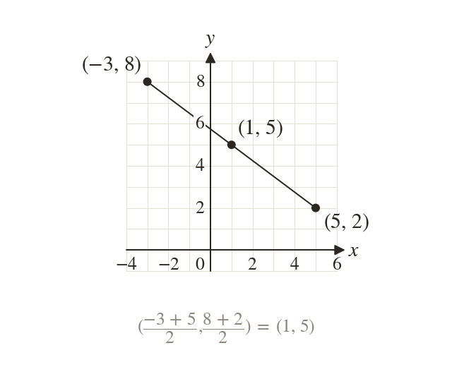
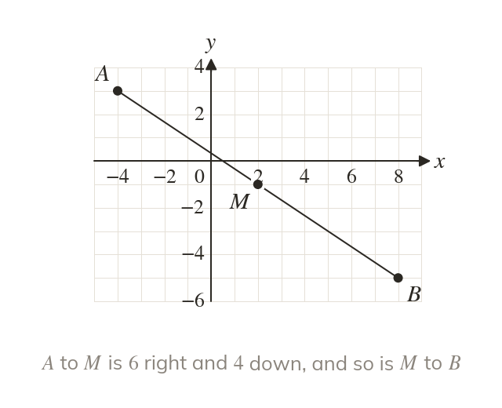
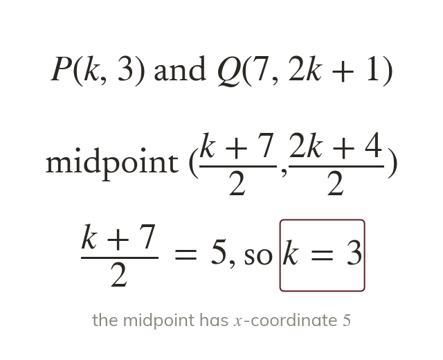
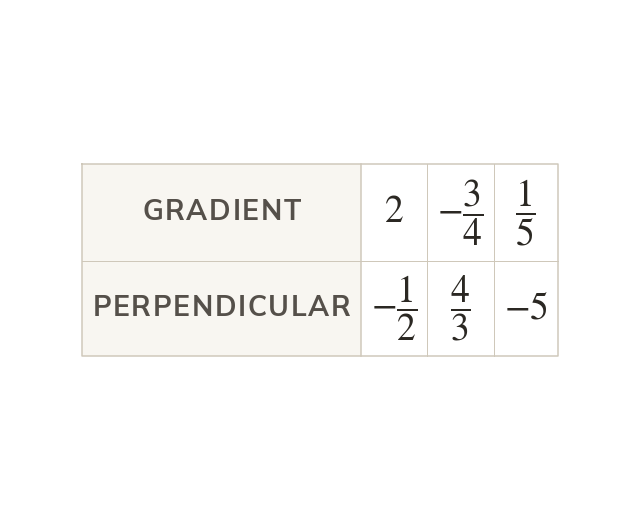
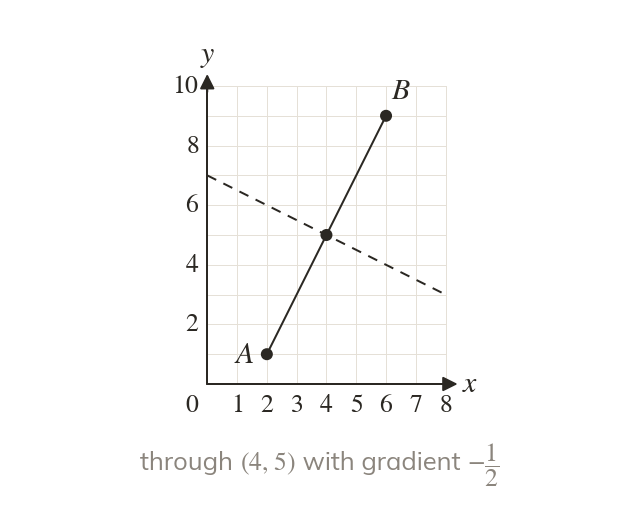
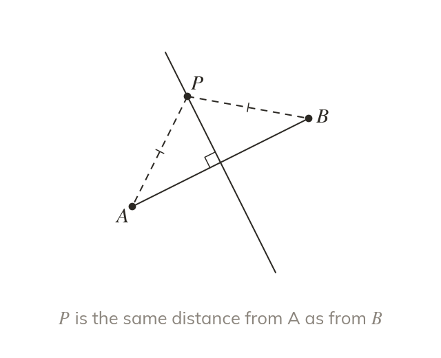

The midpoint
The midpoint of a segment is halfway along in both directions. Add the x-coordinates and halve, then add the y-coordinates and halve.
The centre of a circle lies on the perpendicular bisector of every chord, so midpoints and perpendicular bisectors are the tools for finding a circle from points on it. The next lesson writes the equation of a circle from its centre and radius.
Work down the page at your own pace. Write every answer in your book first, then click to check it.
Read each card, then follow the worked examples one step at a time.

The midpoint of a segment is halfway along in both directions. Add the x-coordinates and halve, then add the y-coordinates and halve.

When the midpoint and one end A are known, the step from to is repeated from . That step lands on the other end, B.

If an end has an unknown such as k, write the midpoint in k. Set one coordinate equal to the value given and solve.
Pick an answer. If it's wrong, the feedback tells you which mistake it was.
Write the blanks in your book first, then tap each one to check.
Read each card, then follow the worked examples one step at a time.

Two lines are perpendicular when their gradients multiply to
If AB has gradient a line perpendicular to it has gradient

It passes through the midpoint of AB and has the perpendicular gradient. Find both, then write the line through that point with that gradient.

Every point on the perpendicular bisector of AB is the same distance from A as from . So the centre of any circle through and lies on it.
Pick an answer. If it's wrong, the feedback tells you which mistake it was.
Write the blanks in your book first, then tap each one to check.
Finished? Next lesson: 6.2 Equation of a Circle.
For each skill, tap the one that is true for you today. Your Revise pages start with anything you mark Not yet.
Your ratings are saved on this device only.
Log in, then search for a code to practise that skill.